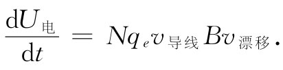
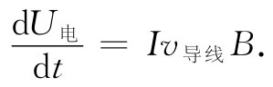
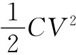
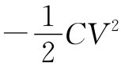

现在我们要来证明，为什么上一节所讨论的能量U机械 并不是与恒定电流相关的正确的能量——它并未包括世界上的总能量。固然，我们曾经强调过它仍是一种能量，可用它由虚功原理算出力来，只要 在回路中的电流（以及所有其他 电流）都维持不变。让我们来看看为什么会是这样。
试设想图15-2上的回路正在沿正x向运动，并选取z轴在B的方向，在边2中的传导电子将感受到一个沿线即沿y向的力。但由于这些电子的流动——造成电流——就会有一个与此力同向的运动分量。因此，每一电子将得到功率为Fy vy 的功，其中vy 是电子沿导线的速度分量。我们将称对电子所做的这个功为电 功。现在证明：如果该回路在一匀强 场中运动，则总电功为零，因为对回路的某些部分做的正功等于对其他部分做的负功。但如果该电路是在一非均匀场中运动，那就不正确了，此时将 会对电子做净功。一般说来，这功会倾向于改变电子的流动，但若电流维持不变，则能量必然会被那些维持电流恒定的电池组或其他电源所吸收或输出。上面当我们由式（15.9）计算U机械 时，这能量还未包括进去，因为我们的计算仅仅包括施于导线整体上的那些机械力。
你可能在想：但作用于电子上的力取决于导线运动得多快 ，若导线运动得足够慢，也许这一电能便可以略去。真的，电能被输出的功率 与导线运动的速率成正比，但输出的总 能量却也与这一功率所持续的时间 成正比。因此，总电能就正比于速度乘时间，那刚好是移动的距离。对于在场中移动给定的距离，就做了相同数量的电功。
让我们考虑单位长度的一段导线，其中通有电流I并沿与其本身及磁场B均成直角的方向以速率v导线 运动。由于通有电流，所以导线中那些电子将具有沿导线的漂移速度v漂移 。对每一电子所施的磁力在漂移方向上的分量为qe v导线 B。因此做出电功的功率为Fv漂移 =（qe v导线 B）v漂移 。设每一单位长度的导线里共有N个传导电子，则所做电功的总功率为

但Nqe v漂移 =I，即导线中的电流，因而

现在由于电流保持恒定，所以作用于那些传导电子上的力并不引起它们加速，也就是说这电能将不会成为电子所有而是归于维持电流不变的那个电源所有。
但要注意作用于导线 上的力为IB，因而IBv导线 也是对导线做机械功 的功率，即dU机械 /dt=IBv导线 。因此我们断言：对导线所做的机械功恰好等于对电流源所做的电功，因而回路的能量保持不变 ！
这并不是偶然的，而是我们所已知定律的一个推论。对导线中每个电荷的总作用力为
F=q（E+v×B）.
其做功的功率为
v·F=q［v·E+v·（v×B）］. （15.12）
如果没有电场，便只有第二项，而这项总是等于零。以后我们将见到，一个正在变化着 的磁场会产生电场，因而我们的论证就只适用于在恒定磁场中移动着的导线。
那么虚功原理又怎会给出正确的答案呢？那是由于我们还 未曾把世界上的总 能量都计算进去。我们未曾把正在产生 磁场（该磁场正被着手进行处理）的电流能量也包括在内。
设想有一个如图15-3（a）所绘的那种完整系统，其中我们正在把带有电流I1 的回路移进磁场B1 中去，而这磁场是由线圈中的电流I2 产生的。原来回路里的电流I1 也将在线圈那里产生某个磁场B2 。如果回路正在移动，则场B2 将正在变化。正如我们将在下一章见到的，一个变化着的磁场会产生一个E场，而这一E场则将对导线中的电荷做功。这样一个能量也应包括在我们关于总能量的出纳表中。
图15-3 试求一个小回路在磁场中的能量
我们本来可以等到下一章才来求出这个新的能量项，但若按照下述办法应用相对性原理，则我们也可见到它将是什么。当把回路朝静止线圈移动时，我们知道回路中的电能恰与所做的机械功相等而符号相反。所以
U机械 +U电 （回路）=0.
现在假设从一个不同的观点来考察所发生的事情，即在其中回路静止不动，而线圈向着它运动。这时线圈正在移进由回路所产生的场中。同样的论证会给出
U机械 +U电 （线圈）=0.
在上述两种情况下所做的机械功相同，因为它来自两电路之间的作用力。
这两个方程之和给出
2U机械 +U电 （回路）+U电 （线圈）=0.
整个系统的总能量，当然就是这两项电能再加上仅取一次 的机械能。因此我们有
U总 =U电 （回路）+U电 （线圈）+U机械 =-U机械 . （15.13）
世界上的总能量确实等于U机械 的负 值。比方，若我们需要磁偶极子的真实能量，则应写成：
U总 =+μ·B.
只有当我们假定一切电流都维持不变的那种条件时才能只用其中某一部分能量、即U机械 （这始终等于真实能量的负值）来求那机械力。在更普遍的问题中，我们就必须细心地把所有一切能量都包括进去。
在静电学中，我们已见过类似的情况。我们曾经证明，一个电容器的能量等于Q2 /（2C）。当我们应用虚功原理去求作用于电容器两板上的力时，能量的改变等于Q2 /2乘以1/C的改变，这就是说，
现在假设我们曾在保持两导体间的电压不变的条件下，计算把两个导体向不同位置移动时所做的功。那么若我们做某些假定，则可以从虚功原理获得关于力的正确答案。由于Q=CV，所以真实的能量就是 。但若我们定义一个等于 的人为能量，以及坚持使电压V维持不变，并令这一人为能量的变化等于机械功，则可应用虚功原理来求力。于是
上式与式（15.14）相同。即使我们忽略了为维持电压不变而由电系统所做的功，也仍能获得正确结果。这个电能又刚好是两倍的机械能而符号相反。
这样，若不把电压源必须作功以维持电压不变这个事实考虑在内，而人为地进行计算，则还是能够获得正确的答案。这与静磁学中的情况完全相似。